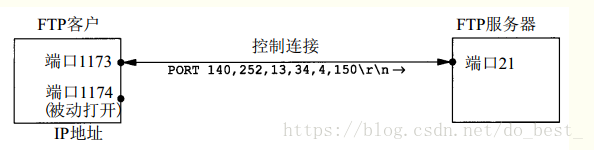

应用层常见协议
HTTP协议（Hyper Text Transfer Protocol，超文本传输协议）
是一种最基本的客户机/服务器的访问协议。浏览器向服务器发送请求，而服务器回应相应的网页,用于从万维网（WWW:World Wide Web ）服务器传输超文本到本地浏览器的传送协议。
—HTTP协议作为TCP/IP模型中应用层的协议也不例外。HTTP协议通常承载于TCP协议之上，有时也承载于TLS或SSL协议层之上，这个时候，就成了我们常说的HTTPS。如下图：
HTTP是一个应用层协议，由请求和响应构成，是一个标准的客户端服务器模型。HTTP是一个无状态的协议
HTTP默认的端口号是80，HTTPS的端口号是443
浏览网页是HTTP的主要应用，但这并不代表HTTP就只能用于网页的浏览。HTTP是一种协议，只要通信的双方都遵守这个协议，HTTPS就能有用武之地。比如常用的QQ，迅雷软件等，都会使用HTTP协议（还包括其他的协议）
HTTP的特点
- 简单快捷
- 客户像服务器请求服务时，只需传送请求方法和路径。由于HTTP协议简单，使得HTTP服务器的程序规模小，因而通信速度很快。
- 灵活
- HTTP允许传输任意类型的数据对象。正在传输的类型由Content-Type加以标记。
- HTTP 0.9 和1.0 使用非持续连接（短连接）
- 限制每次连接只处理一个请求，服务器处理完客户的请求，并收到客户的应答后，即断开连接。HTTP 1.1使用持续连接：不必为每个web对象创建一个新的连接，一个连接可以传送多个对象，采用这种方式可以节省传输时间。
- 无状态
- HTTP协议是无状态协议。无状态是指协议对于事务处理没有记忆能力
- 支持B/S及C/S模式
- 即浏览器/服务器模式和客户端/服务端模式。
- 简单快捷
cookie和session
cookie
- 就是服务器里用来存放用户的信息的地方。
- Cookie翻译过来是‘ 小甜饼’，Cookie是客户端保存用户信息的一种机制，用来记录用户的一些信息，实际上Cookie是服务器在本地机器上存储的一小段文本，并随着每次请求发送到服务器。
- Cookie技术通过请求和响应报文中写入Cookie信息来控制客户端的状态。
session
就是服务器里用来存放用户的信息的地方。
上面我讲到服务端执行session机制时候会生成session的id值，这个id值会发送给客户端，客户端每次请求都会把这个id值放到http请求的头部发送给服务端，而这个id值在客户端会保存下来，保存的容器就是cookie，因此当我们完全禁掉浏览器的cookie的时候，服务端的session也会不能正常使用。
HTTP的工作流程
- 一次HTTP操作称为一个事务，其工作流程可分为4步
- 客户机与服务器需要建立连接。只需要单击某个超链接，HTTP的工作开始
- 建立连接之后，客户机发送一个请求给服务器，请求方式的格式为：
- 统一资源标识符（URL）
- 协议版本号
- 后边是MIME信息包括请求修饰符
- 客户机信息和可能的内容。
- 服务器接到请求后，给与相应的响应信息，其格式为一个状态行，包括信息的协议版本号、一个成功或错误的代码，后面是MIME信息包括服务器信息、实体信息和可能的内容。
- 客户端接收服务器所返回的信息通过浏览器显示在用户的显示屏上，然后客户机与服务器断开连接。
- 如果在以上过程中的某一步出现错误，那么产生错误的信息将返回到客户端，有显示屏输出。对于用户来说，这些过程是由HTTP自己完成的，用户只要用鼠标点击，等待信息显示就可以了。
- 一次HTTP操作称为一个事务，其工作流程可分为4步
HTTP请求消息Request
客户端发送一个HTTP请求到服务器的请求消息包括以下格式：
请求行、请求头部、空行和请求数据四个部分组成。
GET请求
- 第一部分：请求行，用来说明请求类型,要访问的资源以及所使用的HTTP版本.
GET说明请求类型为GET，[/562f25980001b1b106000338.jpg]为要访问的资源，该行的最后一部分说明使用的是HTTP1.1版本。
- 第一部分：请求行，用来说明请求类型,要访问的资源以及所使用的HTTP版本.
第二部分：请求头部，紧接着请求行（即第一行）之后的部分，用来说明服务器要使用的附加信息从第二行起为请求头部，
- HOST将指出请求的目的地.
- User-Agent,服务器端和客户端脚本都能访问它,它是浏览器类型检测逻辑的重要基础.该信息由你的浏览器来定义,并且在每个请求中自动发送等等
- cookie：
- connection
- Accpetc-Language
- 第三部分：空行，请求头部后面的空行是必须的
即使第四部分的请求数据为空，也必须有空行。
- HOST将指出请求的目的地.
第四部分：请求数据也叫主体，可以添加任意的其他数据。
这个例子的请求数据为空。POST请求

- 第一部分：请求行，第一行明了是post请求，以及http1.1版本。
- 第二部分：请求头部，第二行至第六行。
- 第三部分：空行，第七行的空行。
- 第四部分：请求数据，第八行。
HTTP请求消息Response
一般情况下，服务器接收并处理客户端发过来的请求后会返回一个HTTP的响应消息。
HTTP响应也由四个部分组成，分别是：状态行、消息报头、空行和响应正文。
第一部分：状态行，由HTTP协议版本号， 状态码， 状态消息 三部分组成。
第一行为状态行，（HTTP/1.1）表明HTTP版本为1.1版本，状态码为200，状态消息为（ok）第二部分：消息报头，用来说明客户端要使用的一些附加信息
第二行和第三行和第四行为消息报头，Date:生成响应的日期和时间；
- Content-Type:指定了MIME类型的HTML(text/html),编码类型是ISO-8859-1
- Server:
- Content-Type
第三部分：空行，消息报头后面的空行是必须的
第四部分：响应正文，服务器返回给客户端的文本信息。
空行后面的html部分为响应正文。
HTTP状态码
状态代码有三位数字组成，第一个数字定义了响应的类别，共分五种类别:
1xx：指示信息–表示请求已接收，继续处理
2xx：成功–表示请求已被成功接收、理解、接受
3xx：重定向–要完成请求必须进行更进一步的操作
4xx：客户端错误–请求有语法错误或请求无法实现
5xx：服务器端错误–服务器未能实现合法的请求
常见状态码
HTTP请求方法
根据HTTP标准，HTTP请求可以使用多种请求方法。
HTTP1.0定义了三种请求方法： GET, POST 和 HEAD方法。HTTP1.1新增了五种请求方法：OPTIONS, PUT, DELETE, TRACE 和 CONNECT 方法。
HTTP工作原理
HTTP协议定义Web客户端如何从Web服务器请求Web页面，以及服务器如何把Web页面传送给客户端。HTTP协议采用了请求/响应模型。客户端向服务器发送一个请求报文，请求报文包含请求的方法、URL、协议版本、请求头部和请求数据。服务器以一个状态行作为响应，响应的内容包括协议的版本、成功或者错误代码、服务器信息、响应头部和响应数据。
以下是 HTTP 请求/响应的步骤：
1、客户端连接到Web服务器
一个HTTP客户端，通常是浏览器，与Web服务器的HTTP端口（默认为80）建立一个TCP套接字连接。
2、发送HTTP请求
通过TCP套接字，客户端向Web服务器发送一个文本的请求报文，一个请求报文由请求行、请求头部、空行和请求数据4部分组成。
3、服务器接受请求并返回HTTP响应
Web服务器解析请求，定位请求资源。服务器将资源复本写到TCP套接字，由客户端读取。一个响应由状态行、响应头部、空行和响应数据4部分组成。
4、释放连接TCP连接
若connection 模式为close，则服务器主动关闭TCP连接，客户端被动关闭连接，释放TCP连接;若connection 模式为keepalive，则该连接会保持一段时间，在该时间内可以继续接收请求;
5、客户端浏览器解析HTML内容
客户端浏览器首先解析状态行，查看表明请求是否成功的状态代码。然后解析每一个响应头，响应头告知以下为若干字节的HTML文档和文档的字符集。客户端浏览器读取响应数据HTML，根据HTML的语法对其进行格式化，并在浏览器窗口中显示。
问题：
http :80
- https:443Q3：HTTP协议有哪两种类型的包？
Q4:在输入www.baidu.com回车后，等很短的时间，浏览器里会出现百度的主页，这个过程经历了什么？
从封装和解封装的角度去说：
去：
5层协议封装的过程--》只是在你的电脑里 --》http协议封装 路由交换 --》电信网络--》服务器的过程---》nginx- 回：
5层协议封装的过程–》只是在服务器里 –》http协议封装路由交换 --》电信网络--》你的电脑--->chrome
- 回：
浏览器和web服务器执行以下动作
- 浏览器分析超链接中的URL
浏览器想DNS请求解析www.baidu.com的IP地址
- DNS将解析出的IP地址14.215.177.39返回浏览器
浏览器与服务器建立TCP连接（80端口）
- 浏览器请求文档：GRT/index.html
服务器给出响应，将文档index.html发送给浏览器
- 服务器主动释放TCP连接
浏览器渲染index.html的内容
Q5：长连接和短连接
- 长连接 ssh
- 短连接 http
Q6:http的版本？http的1.0版本和2.0版本的区别
Q7：GET和POST的区别
分类 GET POST 后退按钮/刷新 无害 数据会被重新提交（浏览器应该告知用户数据会被重新提交）。 书签 可收藏为书签 不可收藏为书签 缓存 能被缓存 不能缓存 编码类型 application/x-www-form-urlencoded application/x-www-form-urlencoded 或 multipart/form-data。为二进制数据使用多重编码。 历史 参数保留在浏览器历史中。 参数不会保存在浏览器历史中。 对数据长度的限制 是的。当发送数据时，GET 方法向 URL 添加数据；URL 的长度是受限制的（URL 的最大长度是 2048 个字符）。 无限制。 对数据类型的限制 只允许 ASCII 字符。 没有限制。也允许二进制数据。 安全性 与 POST 相比，GET 的安全性较差，因为所发送的数据是 URL 的一部分。在发送密码或其他敏感信息时绝不要使用 GET ！ POST 比 GET 更安全，因为参数不会被保存在浏览器历史或 web 服务器日志中。 可见性 数据在 URL 中对所有人都是可见的。 数据不会显示在 URL 中。
FTP协议（File Transfer Protocol，文件传输协议）
基于客户服务器模式，FTP协议包括两个组成部分，其一为FTP服务器，其二为FTP客户端,提供交互式的访问 面向连接 ,使用TCP/IP可靠的运输服务,主要功能:减少/消除不同操作系统下文件的不兼容性
文件传输协议有基于TCP的FTP和基于UDP的简单文件传输协议TFTP，它们都是文件共享协议中的一大类，即复制整个文件，其特点是：若要存取一个文件，就必须先获得一个本地的文件副本。如果要修改文件，只能对文件的副本进行修改，然后再将修改后的文件传回到原节点
FTP工作原理
FTP屏蔽了各计算机系统的细节，因而适合在异构网络中人以计算机之间传送文件。FTP只提供文件传送的一些基本服务，它使用TCP可靠的传输服务，FTP主要功能是减小或消除在不同系统下处理文件的不兼容性。
FTP使用客户端-服务端模型。一个FTP服务器进程可以为多个客户进程提供服务。FTP服务器有两大部分组成：
主进程
负责接受新的请求
主进程工作步骤
打开熟知端口21，使客户进程能够连接上
等待客户进程发送链接请求
启动从属进程处理客户端进程发送的连接请求，从属进程处理完成请求后结束。从属进程在运行期间可能根据需要可创建其他一些子进程。
回到等待状态，继续接受其他客户进程发起的请求，主进程与从属进程的处理是并发进行的。
-
使用两个TCP连接——
FTP连接在整个会话期间都保持打开，只用来发送连接/传送请求，当客户进程向服务器发送连接请求时，寻找连接服务器的熟知端口21，同时还要告诉服务器进程自己的另一个端口号码，用于建立数据传送连接。接着，服务器进程用自己传送数据的熟知端口20与客户进程所提供的端口号码建立数据传送连接，FTP使用了2两个不同的端口号，所以数据连接和控制连接不会混乱。
若干从属进程
- 负责处理单个请求
FTP数据表示
- FTP协议规定了控制协议传送与存储的多种选择，在以下4个方面必须做出一个选择：
- 文件类型
- ASCII码文件（默认的）
- 图像文件类型（二进制的
- 本地文件类型（用于在具有不同字节大小主机间传送二进制数据）
- 格式控制
- 该选项针对ASCII类型文件适用
- 非打印（默认选择，文件中不包括垂直格式信息）
- 远程登录格式控制。
- 结构
- 文件结构（默认选择，文件被认为是一个连续的字节流，不存在内部的文件结构）
- 记录结构（用于文本文件）
- 传输方式
- 流方式（模式选择，文件以字节流方式传输，对于文件结构，发方在文件尾提示关闭数据连接，对于记录结构，有专用的两字节序列码记录结束和文件结束）
- 块方式（文件以一系列块来传送，每块前面有一个或多个首部字节）
- 压缩方式。
- 文件类型
- FTP协议规定了控制协议传送与存储的多种选择，在以下4个方面必须做出一个选择：
工作模式
- 主动模式
- 被动模式
问题：
如何知道FTP传输一个文件结束
通用传输模式是流方式，并且文件的结尾是以关闭数据连接为标志，这意味着对每一个文件传输或目录列表来说都要建立一个全新的数据连接。一般过程如下：
—正由于是客户发出命令要求建立数据连接，所以数据连接是在客户端的控制下建立的； —客户通常在客户端主机上为所在数据连接端选择一个临时端口号。客户从该端口号发布一个被动的打开； —客户使用PORT命令从控制连接上把端口号发向服务器； —服务器在控制连接上接受端口号，并向客户端主机上的端口发布一个主动的打开。服务器的数据连接段一直使用端口20.给出了第 3步执行时的连接状态。假设客户用于控制连接的临时端口是 11 7 3，客户用于数据连接的临时端口是1174。客户发出的命令是PORT命令，其参数是6个ASCII中的十进制数字，它们之间由逗点隔开。前面 4个数字指明客户上的 I P地址，服务器将向它发出主动打开（本例中是 140.252.13.34），而后两位指明16 bit端口地址。由于16 bit端口地址是从这两个数字中得来，所以其值在本例中就是 4×256+150=1174。
下图给出了服务器向客户所在数据连接端发布主动打开时的连接状态。服务器的端点是端口20
服务器总是执行数据连接的主动打开。通常服务器也执行数据连接的主动关闭，除非当客户向服务器发送流形式的文件时，需要客户来关闭连接。
SMTP协议（简单邮件传送协议，用户发信到邮件网关的传输协议）
介绍
- SMTP（Simple Mail Transfer Protocol）即简单邮件传输协议。它是一组用于由源地址到目的地址传送邮件的规则，由它来控制信件的中转方式。SMTP协议属于TCP/IP协议簇，它帮助每台计算机在发送或中转信件 时找到下一个目的地。通过SMTP协议所指定的服务器,就可以把E-mail寄到收信人的服务器上了，整个过程
只要几分钟。SMTP服务器则是遵循SMTP协议的发送邮件服务器，用来发送或中转发出的电子邮件。 - SMTP 是一种TCP协议支持的提供可靠且有效电子邮件传输的应用层协议。
- SMTP（Simple Mail Transfer Protocol）即简单邮件传输协议。它是一组用于由源地址到目的地址传送邮件的规则，由它来控制信件的中转方式。SMTP协议属于TCP/IP协议簇，它帮助每台计算机在发送或中转信件 时找到下一个目的地。通过SMTP协议所指定的服务器,就可以把E-mail寄到收信人的服务器上了，整个过程
工作过程
- 首先，运行在发送端邮件服务器主机上的SMTP客户，发起简历一个到运行在接收端右键服务器主机上的SMTP服务器端口号25之间的TCP连接。如果接受邮件服务器当前不在工作。SMTP客户就等待一段时间后再尝试建立该连接
SMTP命令和应答
- SMTP主要的命令和应答
- SMTP主要的命令和应答
邮件报文的封装和报文形式
SMTP协议可以将互联网邮件报文封装在邮件对象中。SMTP协议的邮件对象由两个部分组成：信封和内容。
信封其实是一种SMTP命令；
邮件报文是邮件对象中的内容，由首部和主体两个部分。
邮件报文的传输过程
建立连接
SMTP客户和SMTP服务器首先要建立TCP连接。
从客户端使用熟知端口号25建立与服务器的TCP连接，SMTP服务器向该客户送回应答码220，并且还为客户端提供了服务器的域名
客户端收到应答码后，发送HELO命令，启动客户端和服务器之间的SMTP会话。该客户端发送的HELO用来向服务器提供客户端的标识信息
服务器端回应应答码250，通知客户端：请求建立邮件服务会话已经实现
报文发送
在SMTP客户与SMTP服务器之间的连接建立之后，发信的用户就可以与一个或多个收信人交换邮件报文了。
客户用“MAIL ＦＲＯＭ”向服务器报告发信人的邮箱与域名
服务器向客户回应应答码“250”，代表请求命令完成
客户用“RCPT TO”命令向服务器报告收信人的邮箱与域名
服务器向客户回应应答码“250”，代表请求命令完成
客户用“DTAT”命令对报文的传送进行初始化
服务器回应“354”，表示可以进行邮件输入了
客户用连续的行向服务器传送报文的内容，每行以两字符的行结束标识（CR与LF）终止。报文以只有一个“.”的行结束
服务器向客户回应应答码“250”，代表请求命令完成
连接终止
报文发送完毕后终止本次SMTP会话。
—客户端发送QUIT命令；
——服务器收到命令后，回应应答码“221”，并结束会话。
模拟过程

- 建立连接
- 传输报文
- 终止连接
DHCP协议（动态主机配置协议）
动态主机配置协议，是一个应用层协议，使用UDP协议工作。当我们将客户主机ip地址设置为动态获取方式时，DHCP服务器就会根据DHCP协议给客户端分配IP，使得客户机能够利用这个IP上网。
前身是BOOTP协议，是一个局域网的网络协议，使用UDP协议工作，常用的2个端口：67(DHCP server),68(DHCP client)。DHCP通常被用于局域网环境，主要作用是集中的管理、分配IP地址，使client动态的获得IP地址、Gateway地址、DNS服务器地址等信息，并能够提升地址的使用率。简单来说，DHCP就是一个不需要账号密码登录的、自动给内网机器分配IP地址等信息的协议。
DHCP协议中的报文
- DHCP DISCOVER ：客户端开始DHCP过程发送的包，是DHCP协议的开始
- DHCP OFFER ：服务器接收到DHCP DISCOVER之后做出的响应，它包括了给予客户端的IP（yiaddr）、客户端的MAC地址、租约过期时间、服务器的识别符以及其他信息
- DHCP REQUEST ：客户端对于服务器发出的DHCP OFFER所做出的响应。在续约租期的时候同样会使用。
- DHCP ACK ：服务器在接收到客户端发来的DHCP REQUEST之后发出的成功确认的报文。在建立连接的时候，客户端在接收到这个报文之后才会确认分配给它的IP和其他信息可以被允许使用。
- DHCP NAK ：DHCP ACK的相反的报文，表示服务器拒绝了客户端的请求。
- DHCP RELEASE ：一般出现在客户端关机、下线等状况。这个报文将会使DHCP服务器释放发出此报文的客户端的IP地址
- DHCP INFORM ：客户端发出的向服务器请求一些信息的报文
- DHCP DECLINE :当客户端发现服务器分配的IP地址无法使用（如IP地址冲突时），将发出此报文，通知服务器禁止
使用该IP地址。
DHCP的工作流程
DNS协议（域名解析协议）
<1>DNS协议就是用来将域名解析到IP地址的一种协议，当然，也可以将IP地址转换为域名的一种协议。
<2>DNS协议基于UDP和TCP协议的，端口号53，用户到服务器采用UDP，DNS服务器通信采用TCP
<3>大型运营商、互联网机构等会向公众提供免费的DNS服务，例如，谷歌的8.8.8.8 8.8.4.4 阿里巴巴223.5.5.5 223.6.6.6
<4>如果DNS服务器down掉了，那么你只能通过IP地址来访问服务了。域名结构
像Linux目录结构一样，现代因特网采用层次树状结构的命名方法，任何一个连接在因特网上的主机或路由器，都有一个唯一的层次结构的名字，该名字称为域名
例如：xxx.yyy.zzz.com
从右边的com是顶级域名，到左依次是：二级域名，三级域名，四级域名域名的分级：域名可以划分为各个子域，子域还可以继续划分为子域的子域，这样就形成了顶级域、二级域、三级域等。
其中顶级域名分为：国家顶级域名、通用顶级域名、反向域名。
1
2
3-国家顶级域名：中国:cn， 美国:us，英国uk...
-通用顶级域名：com 公司企业 edu教育机构 gov政府部门 int国际组织 mil军事部门 net网络 org非盈利组织...
-反向域名：只有一个arpa，用于PTR查询（IP地址转换为域名） 。
域名服务器
域名服务器主要分为：根域名服务器、顶级域名服务器、权限域名服务器、本地域名服务器。
1
2
3当一个应用要通过DNS来查询某个主机名，比如www.google.com的ip时，粗略地说，查询过程是这样的：它先与根服务器之一联系，根服务器根据顶级域名com，会响应命名空间为com的顶级域服务器的ip；于是该应用接着向com顶级域服务器发出请求，com顶级域服务器会响应命名空间为google.com的权威DNS服务器的ip地址；最后该应用将请求命名空间为google.com的权威DNS服务器，该权威DNS服务器会响应主机名为www.google.com的ip。
实际上，除了上图层次结构中所展示的DNS外，还有一类与我们接触更为密切的DNS服务器，它们是本地DNS服务器，我们经常在电脑上配置的DNS服务器通常就是此类。它们一般由某公司，某大学，或某居民区提供，比如Google提供的DNS服务器8.8.8.8；比如常被人诟病的114.114.114.114等。根域名服务器
根服务器主要用来管理互联网的主目录。
所有根服务器均由美国政府授权的互联网域名与号码分配机构ICANN统一管理，负责全球互联网域名根服务器、域名体系和IP地址等的管理。
全球共有13台根服务器。1个为根服务器架构主根服务器，放置在美国。其余12个均为辅根服务器，其中9个放置在美国，欧洲2个，位于英国和瑞典，亚洲1个，位于日本。 据说，在主根服务器系统上还有一个更高级的、隐藏着的母服务器，当然也在美国，而全世界所有的顶级域名都是由这台母服务器来确定的。
中国还没有自己的根服务器。都是根服务器的镜像（5个）顶级域名服务器
负责管理所有的二级域名权限域名服务器
负责管理一个区。当一个权限域名服务器还不能给出最后的查询回答时，就会告诉查询请求的DNS客户进程，下一步应当找哪一个权限域名服务器；本地域名服务器
可以看成是默认域名服务器，DNS客户进程收到主机发送过来的域名后，就会最初向该域名服务器发送查询请求
总结一下DNS查询过程
1）当客户机提出查询请求时，首先在本地计算机的缓存中查找，如果在本地无法查询信息，则将查询请求发给DNS服务器
2）首先客户机将域名查询请求发送到本地DNS服务器，当本地DNS服务器接到查询后，首先在该服务器管理的区域的记录中查找，如果找到该记录，则进行此记录进行解析，如果没有区域信息可以满足查询要求，服务器在本地缓存中查找
3） 如果本地服务器不能在本地找到客户机查询的信息，将客户机请求发送到根域名DNS服务器
4） 根域名服务器负责解析客户机请求的根域名部分，它将包含下一级域名信息的DNS服务器地址地址，返回给客户机的DNS服务器地址
5） 客户机的DNS服务器利用根域名服务器解析的地址访问下一级DNS服务器，得到再下一级域名的DNS服务器地址
6） 按照上述递归方法逐级接近查询目标，最后在有目标域名的DNS服务器上找到相应IP地址信息
7） 客户机的本地DNS服务器将递归查询结构返回客户机
8） 客户机利用从本地DNS服务器查询得到的IP访问目标主机，就完成了一个解析过程
9） 同时客户机本地DNS服务器更新其缓存表，客户机也更新期缓存表，方便以后查询
如下图所示：